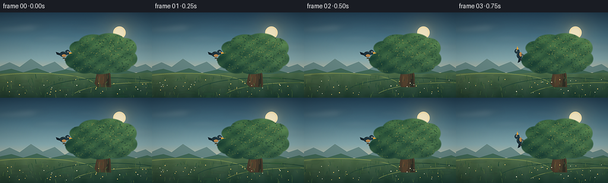
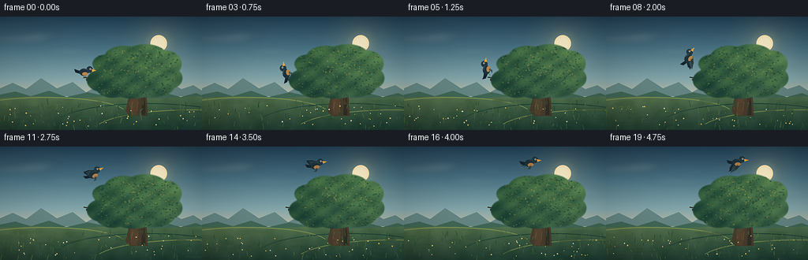
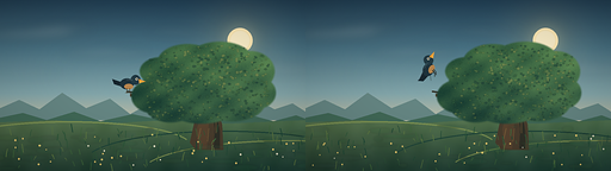

CODING AGENTS AS PIXEL WORLD MODELS
traex/DeepSeek-V4.1-Flash · dynamic_spatial_relationship_0048
点击播放 · 原生 RGB 像素
逐轮保存的候选
回放视频、检查图与代码变化。
每份候选均可单独播放。实际图片检查记录在下方工具轨迹中。
候选 01播放与检查图
点击播放 · 原生 RGB 像素


展开代码变化
--- 上一保存版本
+++ 本次保存版本
@@ -0,0 +1,570 @@
+from __future__ import annotations
+
+import math
+from pathlib import Path
+
+import numpy as np
+from PIL import Image, ImageDraw, ImageFilter
+
+import artifact_io
+
+
+W, H = 256, 144
+SS = 4
+SW, SH = W * SS, H * SS
+FRAMES = 20
+FPS = 4.0
+ROOT = Path(__file__).resolve().parent
+
+
+def px(value: float) -> int:
+ return int(round(value * SS))
+
+
+def xy(point: tuple[float, float]) -> tuple[int, int]:
+ return px(point[0]), px(point[1])
+
+
+def smoothstep(edge0: float, edge1: float, x: float) -> float:
+ t = max(0.0, min(1.0, (x - edge0) / (edge1 - edge0)))
+ return t * t * (3.0 - 2.0 * t)
+
+
+def cubic_bezier(
+ p0: tuple[float, float],
+ p1: tuple[float, float],
+ p2: tuple[float, float],
+ p3: tuple[float, float],
+ t: float,
+) -> tuple[float, float]:
+ u = 1.0 - t
+ return (
+ u**3 * p0[0] + 3 * u**2 * t * p1[0] + 3 * u * t**2 * p2[0] + t**3 * p3[0],
+ u**3 * p0[1] + 3 * u**2 * t * p1[1] + 3 * u * t**2 * p2[1] + t**3 * p3[1],
+ )
+
+
+def cubic_tangent(
+ p0: tuple[float, float],
+ p1: tuple[float, float],
+ p2: tuple[float, float],
+ p3: tuple[float, float],
+ t: float,
+) -> tuple[float, float]:
+ u = 1.0 - t
+ return (
+ 3 * u**2 * (p1[0] - p0[0])
+ + 6 * u * t * (p2[0] - p1[0])
+ + 3 * t**2 * (p3[0] - p2[0]),
+ 3 * u**2 * (p1[1] - p0[1])
+ + 6 * u * t * (p2[1] - p1[1])
+ + 3 * t**2 * (p3[1] - p2[1]),
+ )
+
+
+def make_sky(rng: np.random.Generator) -> Image.Image:
+ stops = np.array([0.0, 0.28, 0.55, 0.75, 0.88, 1.0])
+ colors = np.array(
+ [
+ [37, 69, 91],
+ [73, 115, 133],
+ [132, 167, 171],
+ [211, 199, 166],
+ [246, 205, 146],
+ [240, 166, 111],
+ ],
+ dtype=np.float32,
+ )
+ ys = np.linspace(0.0, 1.0, SH, dtype=np.float32)
+ rgb = np.stack([np.interp(ys, stops, colors[:, c]) for c in range(3)], axis=1)
+ rgb = np.repeat(rgb[:, None, :], SW, axis=1)
+
+ yy, xx = np.mgrid[0:SH, 0:SW].astype(np.float32)
+ sx, sy = 201.0 * SS, 34.0 * SS
+ dist = np.sqrt((xx - sx) ** 2 + (yy - sy) ** 2) / SS
+ glow = np.exp(-(dist / 31.0) ** 2)
+ inner_glow = np.exp(-(dist / 10.5) ** 2)
+ rgb += glow[..., None] * np.array([34.0, 24.0, 10.0], dtype=np.float32)
+ rgb += inner_glow[..., None] * np.array([24.0, 19.0, 8.0], dtype=np.float32)
+
+ # A gentle atmospheric wash keeps the large color field from looking flat.
+ wisps = (
+ np.sin(xx / (41.0 * SS) + 0.8)
+ + np.sin(yy / (16.0 * SS) - xx / (95.0 * SS))
+ ) * 1.1
+ rgb += wisps[..., None] * np.array([0.8, 0.5, 0.2], dtype=np.float32)
+ rgb += rng.normal(0.0, 0.7, (SH, SW, 1)).astype(np.float32)
+ return Image.fromarray(np.clip(rgb, 0, 255).astype(np.uint8), "RGB").convert("RGBA")
+
+
+def add_sun_and_clouds(image: Image.Image) -> Image.Image:
+ draw = ImageDraw.Draw(image, "RGBA")
+
+ # Soft halo and sun disk, placed behind the tree crown.
+ halo = Image.new("RGBA", (SW, SH), (0, 0, 0, 0))
+ hd = ImageDraw.Draw(halo)
+ hd.ellipse(
+ [px(201 - 18), px(34 - 18), px(201 + 18), px(34 + 18)],
+ fill=(255, 229, 170, 45),
+ )
+ halo = halo.filter(ImageFilter.GaussianBlur(9 * SS))
+ image = Image.alpha_composite(image, halo)
+ draw = ImageDraw.Draw(image, "RGBA")
+ draw.ellipse(
+ [px(201 - 10.5), px(34 - 10.5), px(201 + 10.5), px(34 + 10.5)],
+ fill=(255, 235, 184, 220),
+ )
+ draw.ellipse(
+ [px(201 - 8), px(34 - 8), px(201 + 8), px(34 + 8)],
+ fill=(255, 242, 204, 235),
+ )
+
+ clouds = Image.new("RGBA", (SW, SH), (0, 0, 0, 0))
+ cd = ImageDraw.Draw(clouds, "RGBA")
+ cloud_shapes = [
+ (25, 29, 38, 4.0, 31),
+ (53, 23, 27, 3.0, 25),
+ (89, 44, 37, 3.5, 24),
+ (147, 27, 26, 2.6, 22),
+ (232, 58, 35, 3.2, 24),
+ (23, 61, 26, 2.0, 17),
+ ]
+ for cx, cy, rx, ry, alpha in cloud_shapes:
+ cd.ellipse(
+ [px(cx - rx), px(cy - ry), px(cx + rx), px(cy + ry)],
+ fill=(255, 237, 216, alpha),
+ )
+ cd.ellipse(
+ [px(cx - rx * 0.55), px(cy - ry * 1.4), px(cx + rx * 0.35), px(cy + ry * 0.2)],
+ fill=(255, 243, 228, alpha - 5),
+ )
+ clouds = clouds.filter(ImageFilter.GaussianBlur(4.2 * SS))
+ return Image.alpha_composite(image, clouds)
+
+
+def add_mountains_and_ground(image: Image.Image, rng: np.random.Generator) -> Image.Image:
+ draw = ImageDraw.Draw(image, "RGBA")
+
+ far = [
+ (0, 101),
+ (0, 91),
+ (16, 84),
+ (33, 92),
+ (52, 78),
+ (72, 91),
+ (92, 83),
+ (109, 96),
+ (129, 85),
+ (150, 95),
+ (169, 80),
+ (188, 91),
+ (211, 82),
+ (230, 92),
+ (245, 87),
+ (256, 94),
+ (256, 101),
+ ]
+ draw.polygon([xy(p) for p in far], fill=(102, 135, 132, 190))
+
+ near = [
+ (0, 105),
+ (0, 99),
+ (19, 95),
+ (39, 101),
+ (62, 94),
+ (84, 102),
+ (111, 96),
+ (135, 101),
+ (158, 95),
+ (181, 101),
+ (207, 96),
+ (229, 102),
+ (248, 97),
+ (256, 100),
+ (256, 108),
+ (0, 108),
+ ]
+ draw.polygon([xy(p) for p in near], fill=(65, 105, 87, 225))
+
+ ground_mask = Image.new("L", (SW, SH), 0)
+ gd = ImageDraw.Draw(ground_mask)
+ gd.polygon(
+ [
+ xy((0, 103)),
+ xy((44, 101)),
+ xy((91, 104)),
+ xy((139, 101)),
+ xy((191, 104)),
+ xy((256, 101)),
+ xy((256, 144)),
+ xy((0, 144)),
+ ],
+ fill=255,
+ )
+
+ yy = np.linspace(0.0, 1.0, SH, dtype=np.float32)[:, None]
+ t = np.clip((yy - 103.0 / H) / (1.0 - 103.0 / H), 0.0, 1.0)
+ top = np.array([82, 113, 77], dtype=np.float32)
+ bottom = np.array([34, 66, 54], dtype=np.float32)
+ ground = top[None, None, :] * (1 - t[..., None]) + bottom[None, None, :] * t[..., None]
+ ground = np.repeat(ground, SW, axis=1)
+ xx2 = np.linspace(0.0, 1.0, SW, dtype=np.float32)[None, :, None]
+ ground += (0.5 - xx2) * np.array([9.0, 2.0, -2.0], dtype=np.float32)
+ yy2 = yy[..., None]
+ field = (
+ np.sin(xx2 * 24.0 + yy2 * 4.0)
+ + np.sin(xx2 * 51.0 - yy2 * 17.0)
+ + 0.55 * np.sin(xx2 * 93.0 + yy2 * 23.0)
+ )
+ ground += field * 2.2
+ noise = rng.normal(0.0, 3.0, (SH, SW, 1))
+ noise_img = Image.fromarray(
+ np.clip(noise + 128, 0, 255).astype(np.uint8)[..., 0], "L"
+ ).filter(ImageFilter.GaussianBlur(1.1 * SS))
+ ground += (np.asarray(noise_img, dtype=np.float32)[..., None] - 128.0) * 0.45
+ ground_img = Image.fromarray(np.clip(ground, 0, 255).astype(np.uint8), "RGB").convert("RGBA")
+ image = Image.composite(ground_img, image, ground_mask)
+ draw = ImageDraw.Draw(image, "RGBA")
+
+ # Thin bands of field give the meadow depth without competing with the action.
+ draw.arc([px(-45), px(102), px(160), px(143)], 195, 345, fill=(122, 144, 83, 55), width=px(1.2))
+ draw.arc([px(71), px(110), px(305), px(162)], 198, 340, fill=(32, 70, 58, 72), width=px(1.1))
+ draw.arc([px(118), px(118), px(365), px(173)], 200, 338, fill=(126, 145, 82, 48), width=px(1.0))
+ return image
+
+
+def draw_branch(draw: ImageDraw.ImageDraw, points: list[tuple[float, float]], widths: list[float], color):
+ for a, b, width in zip(points[:-1], points[1:], widths):
+ draw.line([xy(a), xy(b)], fill=color, width=px(width))
+ for p in points:
+ draw.ellipse(
+ [px(p[0] - 0.35), px(p[1] - 0.35), px(p[0] + 0.35), px(p[1] + 0.35)],
+ fill=color,
+ )
+
+
+def add_trunk_and_branches(image: Image.Image) -> Image.Image:
+ draw = ImageDraw.Draw(image, "RGBA")
+ bark = (74, 62, 46, 255)
+ bark_dark = (48, 49, 39, 255)
+ bark_light = (118, 91, 57, 180)
+
+ # Main trunk with a slight flare at the base.
+ trunk = [
+ (164, 126),
+ (159, 120),
+ (163, 102),
+ (168, 87),
+ (174, 77),
+ (181, 88),
+ (186, 105),
+ (187, 126),
+ ]
+ draw.polygon([xy(p) for p in trunk], fill=bark)
+ draw.polygon(
+ [xy((166, 125)), xy((165, 108)), xy((172, 86)), xy((176, 91)), xy((174, 111)), xy((173, 125))],
+ fill=(88, 68, 48, 255),
+ )
+ draw.polygon(
+ [xy((179, 125)), xy((180, 108)), xy((177, 91)), xy((181, 94)), xy((184, 110)), xy((184, 125))],
+ fill=bark_dark,
+ )
+
+ # Left perch branch is deliberately long so the starting spatial relation is clear.
+ draw_branch(
+ draw,
+ [(172, 94), (158, 90), (145, 86), (133, 83), (121, 81), (109, 80)],
+ [5.2, 4.8, 4.3, 3.8, 3.1, 2.2],
+ bark,
+ )
+ draw_branch(
+ draw,
+ [(119, 81), (113, 78), (106, 77)],
+ [2.0, 1.4, 0.8],
+ bark_dark,
+ )
+ draw_branch(
+ draw,
+ [(174, 91), (187, 84), (203, 80), (215, 74)],
+ [4.8, 3.8, 2.7, 1.6],
+ bark,
+ )
+ draw_branch(
+ draw,
+ [(175, 83), (177, 69), (181, 58)],
+ [4.2, 2.8, 1.5],
+ bark_dark,
+ )
+ draw_branch(
+ draw,
+ [(180, 89), (194, 96), (207, 98)],
+ [3.0, 2.0, 1.0],
+ bark_dark,
+ )
+
+ # A few bark marks and sunlit edges.
+ for x0, y0, x1, y1, width in [
+ (166, 117, 168, 108, 0.65),
+ (174, 119, 175, 108, 0.55),
+ (181, 112, 181, 101, 0.45),
+ (170, 97, 168, 89, 0.45),
+ (136, 84, 126, 82, 0.4),
+ (187, 85, 199, 81, 0.45),
+ ]:
+ draw.line([xy((x0, y0)), xy((x1, y1))], fill=bark_light, width=px(width))
+ return image
+
+
+def canopy_mask() -> np.ndarray:
+ mask = Image.new("L", (SW, SH), 0)
+ draw = ImageDraw.Draw(mask)
+ blobs = [
+ (169, 64, 42, 23),
+ (145, 69, 25, 19),
+ (192, 68, 31, 22),
+ (157, 52, 25, 15),
+ (184, 51, 28, 16),
+ (210, 60, 20, 17),
+ (128, 81, 18, 14),
+ (143, 88, 22, 15),
+ (169, 88, 31, 16),
+ (195, 86, 27, 16),
+ (217, 78, 14, 13),
+ (135, 60, 18, 12),
+ ]
+ for cx, cy, rx, ry in blobs:
+ draw.ellipse([px(cx - rx), px(cy - ry), px(cx + rx), px(cy + ry)], fill=255)
+ mask = mask.filter(ImageFilter.GaussianBlur(0.55 * SS))
+ return np.asarray(mask, dtype=np.float32) / 255.0
+
+
+def add_canopy(image: Image.Image, rng: np.random.Generator) -> Image.Image:
+ mask = canopy_mask()
+ yy, xx = np.mgrid[0:SH, 0:SW].astype(np.float32)
+ nx = xx / SW
+ ny = yy / SH
+
+ # Base color is a cool dark green with a warm, sun-facing upper-right side.
+ dark = np.array([30, 65, 53], dtype=np.float32)
+ mid = np.array([52, 94, 62], dtype=np.float32)
+ light = np.array([117, 135, 72], dtype=np.float32)
+ vertical = np.clip((0.78 - ny) / 0.46, 0.0, 1.0)[..., None]
+ colors = dark[None, None, :] * (1 - vertical) + mid[None, None, :] * vertical
+ sun_side = np.clip((nx - 0.48) * 2.5, 0.0, 1.0)[..., None]
+ colors += light[None, None, :] * sun_side * 0.26
+
+ foliage_noise = (
+ np.sin(xx / (4.7 * SS) + yy / (3.2 * SS))
+ + np.sin(xx / (9.2 * SS) - yy / (5.5 * SS))
+ + rng.normal(0.0, 0.75, (SH, SW))
+ )
+ colors += foliage_noise[..., None] * np.array([7.0, 7.5, 3.0], dtype=np.float32)
+ alpha = (mask * 255).astype(np.uint8)
+ canopy = Image.fromarray(np.clip(colors, 0, 255).astype(np.uint8), "RGB").convert("RGBA")
+ canopy.putalpha(Image.fromarray(alpha, "L"))
+ image = Image.alpha_composite(image, canopy)
+
+ # Small leaf clusters break up the mass and create a hand-painted surface.
+ leaves = Image.new("RGBA", (SW, SH), (0, 0, 0, 0))
+ ld = ImageDraw.Draw(leaves, "RGBA")
+ leaf_colors = [
+ (34, 70, 55, 150),
+ (47, 89, 60, 150),
+ (70, 109, 63, 150),
+ (104, 127, 70, 120),
+ (132, 143, 78, 105),
+ (24, 59, 53, 130),
+ ]
+ accepted = 0
+ while accepted < 520:
+ x = rng.uniform(123, 225)
+ y = rng.uniform(38, 101)
+ ix, iy = min(SW - 1, px(x)), min(SH - 1, px(y))
+ if mask[iy, ix] < 0.72:
+ continue
+ radius = rng.uniform(0.35, 1.25)
+ color = leaf_colors[int(rng.integers(0, len(leaf_colors)))]
+ ld.ellipse(
+ [px(x - radius), px(y - radius * 0.75), px(x + radius), px(y + radius * 0.75)],
+ fill=color,
+ )
+ accepted += 1
+
+ # A few crisp crown highlights catch the sun.
+ for _ in range(55):
+ x = rng.uniform(154, 216)
+ y = rng.uniform(43, 75)
+ ix, iy = min(SW - 1, px(x)), min(SH - 1, px(y))
+ if mask[iy, ix] < 0.8:
+ continue
+ r = rng.uniform(0.45, 1.15)
+ ld.ellipse([px(x - r), px(y - r), px(x + r), px(y + r)], fill=(160, 158, 83, 105))
+ leaves = leaves.filter(ImageFilter.GaussianBlur(0.18 * SS))
+ return Image.alpha_composite(image, leaves)
+
+
+def add_meadow_details(image: Image.Image, rng: np.random.Generator) -> Image.Image:
+ draw = ImageDraw.Draw(image, "RGBA")
+
+ # Soft patches of low vegetation.
+ patches = Image.new("RGBA", (SW, SH), (0, 0, 0, 0))
+ pd = ImageDraw.Draw(patches, "RGBA")
+ for _ in range(40):
+ x = rng.uniform(-5, 260)
+ y = rng.uniform(106, 144)
+ rx = rng.uniform(3, 14)
+ ry = rng.uniform(0.8, 2.7)
+ color = (35 + int(rng.integers(0, 27)), 67 + int(rng.integers(0, 35)), 48 + int(rng.integers(0, 20)), 45)
+ pd.ellipse([px(x - rx), px(y - ry), px(x + rx), px(y + ry)], fill=color)
+ patches = patches.filter(ImageFilter.GaussianBlur(0.7 * SS))
+ image = Image.alpha_composite(image, patches)
+ draw = ImageDraw.Draw(image, "RGBA")
+
+ # Grass blades in the foreground frame the meadow.
+ blade_colors = [(32, 74, 55), (45, 87, 57), (64, 103, 61), (91, 119, 67)]
+ for _ in range(130):
+ x = rng.uniform(0, 256)
+ y = rng.uniform(111, 145)
+ h = rng.uniform(2.0, 7.5)
+ lean = rng.uniform(-2.0, 2.0)
+ color = blade_colors[int(rng.integers(0, len(blade_colors)))] + (int(rng.integers(100, 210)),)
+ draw.line(
+ [xy((x, y)), xy((x + lean * 0.45, y - h * 0.62)), xy((x + lean, y - h))],
+ fill=color,
+ width=px(rng.uniform(0.35, 0.75)),
+ joint="curve",
+ )
+
+ # Tiny warm flowers and seed heads, kept away from the bird's initial perch.
+ for _ in range(36):
+ x = rng.uniform(4, 251)
+ y = rng.uniform(113, 139)
+ if 96 < x < 125 and y < 128:
+ continue
+ r = rng.uniform(0.35, 0.8)
+ color = (232, 201, 111, int(rng.integers(130, 220))) if rng.random() < 0.72 else (226, 223, 194, 170)
+ draw.ellipse([px(x - r), px(y - r), px(x + r), px(y + r)], fill=color)
+ return image
+
+
+def make_bird_layer(flying: bool, wing_phase: float) -> Image.Image:
+ size = 72
+ layer = Image.new("RGBA", (size * SS, size * SS), (0, 0, 0, 0))
+ d = ImageDraw.Draw(layer, "RGBA")
+ ox, oy = 35.0, 35.0
+
+ def p(x: float, y: float) -> tuple[int, int]:
+ return px(ox + x), px(oy + y)
+
+ if flying:
+ flap = (math.sin(wing_phase) + 1.0) * 0.5
+ up_points = [(-1.5, -2.5), (-7.0, -5.0), (-11.0, -14.0), (-4.0, -12.0), (4.0, -5.5)]
+ down_points = [(-1.5, -1.0), (-8.0, 3.5), (-11.5, 11.0), (-3.0, 8.0), (4.0, 2.0)]
+ far_points = []
+ near_points = []
+ for (ux, uy), (dx, dy) in zip(up_points, down_points):
+ far_points.append((ux * 0.95 + (dx - ux) * flap, uy + (dy - uy) * flap))
+ near_points.append((ux * 0.86 + (dx - ux) * flap + 1.0, uy + (dy - uy) * flap + 1.4))
+ d.polygon([p(*q) for q in far_points], fill=(25, 40, 48, 245))
+ d.polygon([p(*q) for q in near_points], fill=(42, 65, 70, 245))
+ d.line([p(-2.5, -2.0), p(-7.0, -4.0 + 7.0 * flap), p(-10.0, -11.0 + 18.0 * flap)], fill=(20, 32, 39, 210), width=px(0.8))
+ d.line([p(0.2, -1.3), p(-4.0, 1.2 + 5.0 * flap), p(-8.2, 2.5 + 8.0 * flap)], fill=(58, 80, 78, 170), width=px(0.55))
+
+ # Tail, body, warm underside, head, and beak.
+ d.polygon([p(-4.0, -1.0), p(-13.0, -4.0), p(-11.5, 0.3), p(-4.5, 2.6)], fill=(24, 39, 47, 255))
+ d.ellipse([p(-6.5, -4.4), p(5.0, 4.6)], fill=(31, 51, 60, 255))
+ d.ellipse([p(-3.0, 0.0), p(4.5, 4.4)], fill=(185, 130, 72, 235))
+ d.ellipse([p(2.5, -7.5), p(10.5, 0.8)], fill=(36, 59, 68, 255))
+ d.polygon([p(9.2, -3.9), p(15.0, -2.0), p(9.4, -0.4)], fill=(236, 150, 48, 255))
+ d.polygon([p(9.4, -2.3), p(14.0, -2.0), p(9.5, -1.2)], fill=(255, 191, 75, 220))
+ d.ellipse([p(6.4, -5.0), p(8.5, -2.9)], fill=(236, 225, 195, 255))
+ d.ellipse([p(7.2, -4.4), p(8.1, -3.5)], fill=(12, 22, 28, 255))
+ d.line([p(-1.0, -3.8), p(3.8, -3.2)], fill=(78, 101, 102, 125), width=px(0.45))
+
+ if flying:
+ # Tucked legs read as a small backward stroke in flight.
+ d.line([p(0.3, 3.6), p(-1.5, 6.5), p(-3.7, 7.2)], fill=(37, 42, 37, 230), width=px(0.7))
+ d.line([p(1.4, 3.8), p(0.0, 6.8), p(-2.0, 7.8)], fill=(37, 42, 37, 220), width=px(0.65))
+ else:
+ # Perched legs and feet.
+ for x in (-0.7, 1.4):
+ d.line([p(x, 3.7), p(x - 0.2, 7.2)], fill=(73, 64, 43, 255), width=px(0.62))
+ d.line([p(x - 0.2, 7.2), p(x - 1.3, 7.8)], fill=(73, 64, 43, 255), width=px(0.5))
+ d.line([p(x - 0.2, 7.2), p(x + 0.8, 7.8)], fill=(73, 64, 43, 255), width=px(0.5))
+
+ return layer
+
+
+def paste_bird(
+ image: Image.Image,
+ center: tuple[float, float],
+ flying: bool,
+ wing_phase: float,
+ rotation_deg: float,
+) -> Image.Image:
+ layer = make_bird_layer(flying, wing_phase)
+ if abs(rotation_deg) > 0.01:
+ layer = layer.rotate(rotation_deg, resample=Image.Resampling.BICUBIC, expand=True)
+ cx, cy = px(center[0]), px(center[1])
+ left = int(round(cx - layer.width / 2))
+ top = int(round(cy - layer.height / 2))
+ image.alpha_composite(layer, (left, top))
+ return image
+
+
+def add_finishing_light(image: Image.Image) -> Image.Image:
+ # Subtle vignette and cool shadow along the lower edge.
+ yy, xx = np.mgrid[0:SH, 0:SW].astype(np.float32)
+ nx = xx / (SW - 1) * 2.0 - 1.0
+ ny = yy / (SH - 1) * 2.0 - 1.0
+ vignette = np.clip(1.0 - 0.18 * (nx**2 * 0.55 + ny**2 * 0.8), 0.72, 1.0)
+ rgb = np.asarray(image.convert("RGB"), dtype=np.float32)
+ rgb *= vignette[..., None]
+ return Image.fromarray(np.clip(rgb, 0, 255).astype(np.uint8), "RGB")
+
+
+def render_frame(frame_index: int) -> np.ndarray:
+ rng = np.random.default_rng(30481 + frame_index * 7919)
+ image = make_sky(rng)
+ image = add_sun_and_clouds(image)
+ image = add_mountains_and_ground(image, rng)
+ image = add_trunk_and_branches(image)
+ image = add_canopy(image, rng)
+ image = add_meadow_details(image, rng)
+
+ p0 = (108.0, 71.5)
+ p1 = (95.5, 53.0)
+ p2 = (116.0, 25.5)
+ p3 = (167.0, 21.0)
+ if frame_index <= 2:
+ center = p0
+ flying = False
+ rotation = 0.0
+ wing_phase = 0.0
+ else:
+ t = min(1.0, (frame_index - 2) / 16.0)
+ eased = t * t * (3.0 - 2.0 * t)
+ center = cubic_bezier(p0, p1, p2, p3, eased)
+ tangent = cubic_tangent(p0, p1, p2, p3, eased)
+ flying = True
+ rotation = math.degrees(math.atan2(-tangent[1], tangent[0])) * 0.78
+ wing_phase = (frame_index - 3) * 1.45 + 0.35
+ if frame_index >= 18:
+ # The final hold uses a broad glide pose.
+ wing_phase = math.pi * 0.5
+
+ image = paste_bird(image, center, flying, wing_phase, rotation)
+ image = add_finishing_light(image)
+ low = image.resize((W, H), Image.Resampling.LANCZOS)
+ low = low.filter(ImageFilter.UnsharpMask(radius=0.9, percent=42, threshold=2))
+ return np.asarray(low, dtype=np.uint8)
+
+
+def main() -> None:
+ frames = np.stack([render_frame(i) for i in range(FRAMES)], axis=0)
+ artifact_io.save(frames, ROOT)
+ print(f"saved {frames.shape[0]} frames at {frames.shape[2]}x{frames.shape[1]} ({FPS:g} fps)")
+
+
+if __name__ == "__main__":
+ main()
可观测工具轨迹
实际执行的命令与返回图片。
命令 1exit 0
/bin/bash -c "sed -n '1,240p' prompt.txt"
命令 2exit 0
/bin/bash -c "sed -n '1,280p' GENERATION_RULES.md"
命令 3exit 0
/bin/bash -c 'cat task_spec.json'
命令 4exit 0
/bin/bash -c "printf '%s\\n' '--- files ---'; rg --files -g '"'!*.pyc'"' | sed -n '1,240p'; printf '%s\\n' '--- tools ---'; command -v ffmpeg; command -v blender; command -v python3; command -v convert; command -v magick; command -v chromium; command -v node"
命令 5exit 0
/bin/bash -c "sed -n '1,260p' artifact_io.py"
命令 6exit 0
/bin/bash -c "sed -n '1,260p' player_template.html"
命令 7exit 0
/bin/bash -c "python3 - <<'PY' import importlib.util for x in ['numpy','PIL','imageio','cv2','matplotlib','scipy']: print(x, bool(importlib.util.find_spec(x))) PY"
命令 8exit 1
/bin/bash -c 'python3 generate.py'
命令 9exit 1
/bin/bash -c 'python3 generate.py'
命令 10exit 0
/bin/bash -c "nl -ba generate.py | sed -n '190,235p'"
命令 11exit 1
/bin/bash -c 'python3 generate.py'
命令 12exit 0
/bin/bash -c 'python3 generate.py'
命令 13exit 0
/bin/bash -c "python3 - <<'PY'
from PIL import Image
import numpy as np
for i in [0,2,3,8,13,17,19]:
a=np.asarray(Image.open(f'frames/{i:02d}.png'))
print(i, 'mean', a.mean((0,1)).round(1), 'range', (a.min(), a.max()))
PY"命令 14exit 0
/bin/bash -c "python3 - <<'PY'
from PIL import Image
im=Image.open('inspection.png')
# crop frames 0 and 7 at 2x for close inspection
out=Image.new('RGB',(1024,288))
for j,i in enumerate([0,7]):
a=Image.open(f'frames/{i:02d}.png').resize((512,288),Image.Resampling.NEAREST)
out.paste(a,(j*512,0))
out.save('.tmp/detail.png')
PY"视觉工具实际返回图片 1

视觉工具实际返回图片 2

保存候选 1 份；完成命令 14 次；可验证图片返回 2 张。原始 API 响应与完整日志保留在本地。